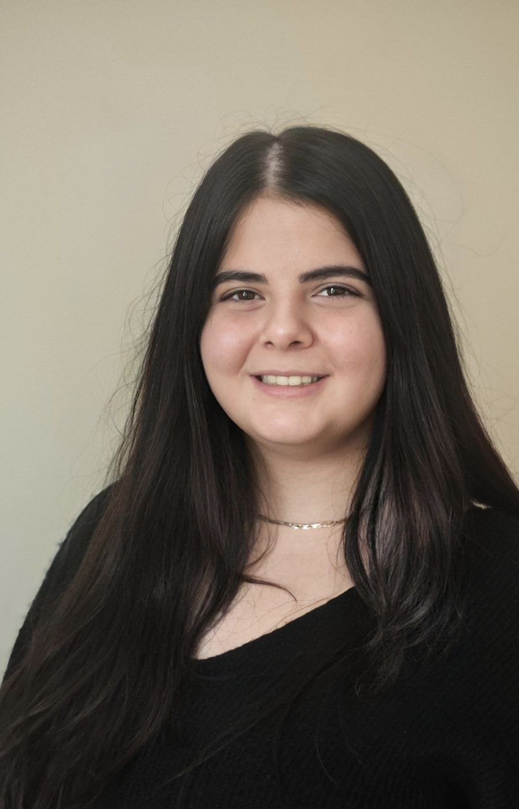

Запис
Як домовитися про зустріч
Приватна консультація для дорослих від 18 років. Зустріч триває одну годину та проходить у Google Meet.
Напишіть мені в Telegram, узгодимо час особисто.
ЗаписатисьСкасувати чи перенести можна щонайменше за 48 годин. Консультація не замінює невідкладну допомогу.

Важливо
Коли не варто чекати консультації
Якщо просто зараз є думки про самоушкодження з наміром діяти, сталося передозування, людина непритомна або її поведінка загрожує життю, телефонуйте 103, не чекаючи запису.
Усі ситуації, коли потрібна невідкладна допомогаЗустрічаємося у Google Meet.
Записатись на консультацію